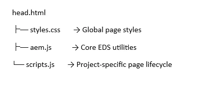
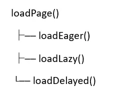
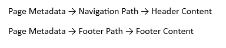
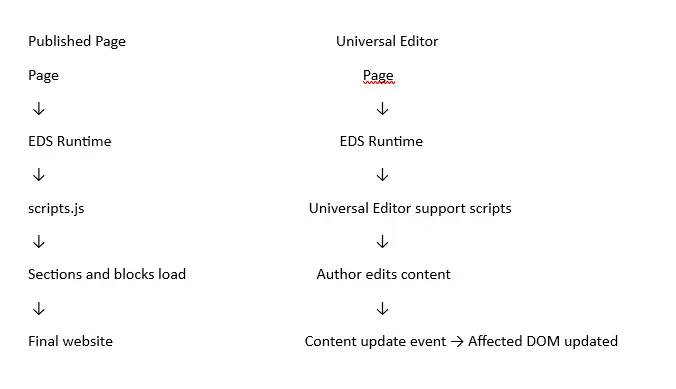
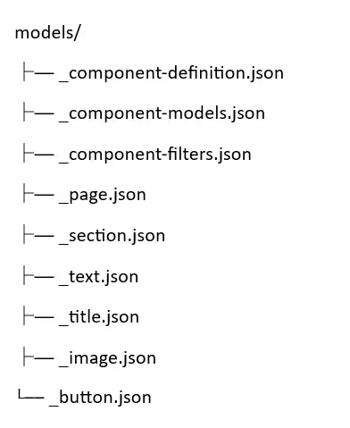

Blogs > Project Structure in Edge Delivery Services
AEM EDS
Project Structure in Edge Delivery Services
| September 10, 2026Happy to find you here. Welcome to another learning.
If you have opened an EDS project for the first time, the folder structure can look a little confusing. There is no components folder like we are used to in AEM Sites, no OSGi bundles, and no ui.apps. Instead you will find folders like blocks, scripts and styles sitting right at the root of the project. In this blog we will go through every important folder and file in an EDS project, understand what each one is responsible for, and see how a page actually loads from the moment a user opens it to the moment it is fully rendered on the screen.
1. Project Structure Overview
A typical EDS project looks like this:
Each of these folders has a clear, single responsibility, so let's break them down one by one before we look at how they work together.
scripts/ - Controls the page runtime and overall loading lifecycle. This is where the main JavaScript logic of the EDS project sits, including page decoration, block discovery, block loading, and execution of common site functionality. Files such as scripts.js act as the main entry point for processing the page.
blocks/ - Contains reusable page components such as hero banners, cards, columns, and custom blocks. Each block typically has its own JavaScript (.js) for behavior and CSS (.css) for styling. Blocks are identified from the page HTML and dynamically loaded during page processing.
styles/ - Contains global styles that apply across the whole website, such as common layouts, typography, spacing, variables, and shared design rules. Unlike block-specific CSS, these styles are generally used across multiple pages and components.
fonts/ - Contains the font files and related resources used by the website. These fonts are loaded and applied through the project's global styling configuration to maintain consistent typography.
icons/ - Contains reusable icon assets referenced throughout the website. These can be used by blocks or common site functionality without duplicating the same assets in multiple components.
models/ - Contains the source configuration and definitions used by Universal Editor for content authoring. These configurations define components, fields, properties, and authoring behavior, helping Universal Editor understand what content authors can create and edit.
Root configuration files - Contains project-level configuration files that control different aspects of the EDS project, such as paths, metadata, sitemap and index configuration, component definitions, filters, and other project behavior. These files help connect the codebase, authoring setup, and EDS runtime configuration together.
Out of all of these, the relationship between head.html, the files inside scripts/, and the blocks loaded from blocks/ is the most important one to understand, because that is what actually decides how fast and how correctly your page loads.
2. Page Request and Runtime Flow
When a user opens a page, the browser first receives the page HTML and then starts loading the resources that the project needs. At a high level, this is what happens:
When a user opens a page, EDS delivers the page HTML, after which head.html provides the global resources and aem.js and scripts.js are loaded. This starts the page processing lifecycle, where the page sections and blocks are identified and prepared, the required block CSS and JavaScript resources are loaded, and finally the processed and decorated content is displayed to the user as the final page UI.
This entire runtime flow is controlled by two JavaScript files - scripts/aem.js and scripts/scripts.js. Both files get loaded on every page, but they do not do the same job, so let's understand each one separately.
3. head.html - Loading Global Resources
head.html is the very first thing that gets pulled in, and it is responsible for making sure the global resources are available before anything else runs.

Think of head.html as the doorway - it does not decide how the page behaves, it simply makes sure the door is open and the right files are in the room before the actual work starts.
4. scripts/aem.js - Core EDS Utilities
aem.js provides the core, reusable utility functions that are used to process a page. It does not know anything specific about your project - it just knows how to read metadata, prepare sections and load blocks. Some of its important functions are:
getMetadata() - Reads metadata values defined for the current page, such as the page title, description, template-related information, navigation settings, or other custom metadata used during page processing and rendering
decorateSections() - Identifies the sections present inside the main page content and prepares them by adding the required structure and classes. Once sections are identified, EDS can treat each section as a separate unit and load or process them at different stages of the page lifecycle.
decorateBlocks() - Identifies the blocks available within the page sections and prepares them for further processing. It recognizes the block structure from the page HTML and ensures that each block can later be loaded with its corresponding resources.
decorateBlock() - Prepares an individual block by adding the required classes, attributes, and block-specific information so that EDS can correctly identify, load, and render that block.
decorateButtons() - Identifies links or elements in the page content that are intended to behave as buttons and applies the required button-related classes, allowing them to receive consistent button styling across the site.
decorateIcons() - Identifies icon references within the page content and replaces or transforms them into the appropriate icon elements, making the required icon assets available for rendering.
loadBlock() - Loads the CSS and JavaScript required for an individual block and then executes the block's decorate() function to transform the original block HTML into its final UI. This acts as the main connection between the EDS runtime and the corresponding component files inside the blocks/ folder.
loadSection() - Loads and processes the blocks contained within a single section. This allows EDS to handle the page section by section rather than requiring all page content to be processed in exactly the same way or at the same time.
loadSections() - Loads and processes multiple sections across the page, coordinating their loading so that the page content can be progressively prepared and rendered as part of the overall page lifecycle.
The overall role of aem.js can be represented like this:
5. scripts/scripts.js - Project Page Lifecycle
While aem.js gives you the reusable EDS utilities, scripts.js is where your project decides how a page actually gets processed. Its main lifecycle looks like this:

This divides page loading into three phases - Eager, Lazy and Delayed - and each phase loads a different set of resources depending on how important they are for the initial experience.
6. Eager Loading
The eager phase handles the content that is required the moment the page opens. It starts with loadEager(document), and the goal is simple - get the most important content on screen as fast as possible.
The Eager Loading phase handles the content that needs to be available immediately when the page opens. Its main goal is to make the most important content visible to the user as quickly as possible. The process starts when loadEager() is executed. First, the page is prepared for processing. The main content of the page is then decorated so that the page structure can be properly identified and organized. After decorating the main content, the system processes the sections and blocks present on the page. During the eager phase, priority is given to the first section because it generally contains the content that the user sees immediately when the page loads. The required blocks inside this important section are loaded and decorated, allowing their HTML, CSS, and JavaScript to be processed. Once this processing is complete, the important content becomes visible to the user.
7. decorateMain() - Preparing the Main Page Content
During the eager phase, the main page content is processed through decorateMain(), which internally runs these steps in order:
decorateButtons() - Identifies eligible links or page elements that should be displayed as buttons and applies the required classes and structure. This ensures that buttons are styled consistently across the page and behave according to the project's design.
decorateIcons() - Identifies icon references in the page content and converts them into actual icon elements. The required icon files are typically loaded from the icons/ folder, for example icons/search.svg, allowing icons to be displayed consistently throughout the website.
buildAutoBlocks() - Provides an extension point for automatically generating blocks based on the page content. In a fresh EDS project, this function usually exists as a placeholder, but developers can add custom logic to automatically convert specific content patterns into blocks.
decorateSections() and decorateBlocks() - Work together to identify and prepare the structure of the page. decorateSections() identifies the different sections in the page content, while decorateBlocks() identifies the individual blocks inside those sections. This allows the EDS runtime to determine which blocks are present and load the required CSS and JavaScript resources for them.
By the end of this process, EDS knows which sections exist on the page, which blocks live inside each section, and which block resources still need to be fetched.
8. Runtime Block Lifecycle
Once decoration is complete, blocks get loaded as part of the section loading process. Put together, the full lifecycle of an existing block looks like this:
When the browser first loads the page HTML, the scripts.js file starts the page processing lifecycle and calls decorateMain() to prepare and organize the main content. The page content is then divided into sections, and the blocks inside each section are identified and prepared for processing. Each section and its blocks are processed, and for every individual block, loadBlock() is called to load the required block CSS and import the corresponding block JavaScript. The block's decorate() function is then executed, transforming the original block HTML into the required structure, styling, and behavior. After all the required sections and blocks have been processed, the transformed content is rendered and displayed to the user as the final page interface.
Notice the division of responsibility here - the runtime is responsible for loading and executing a block, while the block's own JavaScript is responsible for transforming its own content. A typical block file looks as simple as this:
export default function decorate(block) {
// Transform the block DOM
9. Lazy Loading
After the critical content is displayed, EDS loads the remaining page content and resources in the Lazy phase. This is important because loading every section, block, image, style, and other resource immediately would increase the amount of work the browser has to perform during the initial page load. Moving non-critical work to Lazy allows EDS to prioritize what the user needs first and process the rest afterward.
The loadLazy() phase loads the remaining content that is not required immediately when the page first opens. It processes the remaining sections and blocks, and then loads additional page elements such as the header and footer. Lazy styles and fonts are also loaded during this phase, allowing the most important content to appear first while less critical resources are loaded afterward.
10. Header and Footer Loading
The Header and Footer are not treated like regular page content - they are loaded separately, during this same lazy phase, and they can rely on page metadata to decide exactly what to load:

If no metadata is configured, the implementation simply falls back to sensible default paths. So although Header and Footer are very much part of the runtime, they are handled a little differently from the blocks that live inside your main page content.
The header and footer can contain a significant amount of content and resources, such as navigation links, icons, images, menus, and other site-wide elements. Loading all of this during the initial page processing could add unnecessary work before the main page content becomes visible. Therefore, EDS loads the Header and Footer during the Lazy phase, allowing the main page content to get priority while these shared site elements are loaded afterward.
11. Delayed Loading
The last phase is the delayed phase, started using loadDelayed(). This is where scripts/delayed.js is loaded, well after the initial content has already been processed. This phase is meant for things that do not affect what the user sees first, such as analytics, third-party integrations, tracking scripts, and other non-critical functionality. Put together, the complete loading strategy of an EDS page is:
Eager Critical page content
LAZY Remaining page resources
DELAYED Non-critical functionality
12. The blocks/ Folder
The blocks/ folder contains the reusable components used to build different sections of an EDS page. Each component, such as a Hero, Cards, Columns, Header, or Footer, is maintained as an independent block.
Each block usually carries its own small set of files:
.js - Contains the JavaScript that processes the block, transforms its HTML, and adds the required functionality and behavior.
.css - Contains the styles specific to that block, including its layout, appearance, spacing, and responsive behavior.
.json - Contains the block configuration used for Universal Editor authoring, defining how the component is exposed to authors and what content or fields can be configured.
13. The styles/ Folder
This folder holds the global project styles, split across three files that each load at a different point:
styles.css - Contains the global and critical styles, loaded as part of the initial page resources. This is where you typically find your CSS variables, base page styling, typography, responsive rules and common layout rules.
lazy-styles.css - Contains styles that are not needed for the first render, so it is loaded during the lazy phase instead.
fonts.css - Contains your @font-face declarations, which point to the actual font files kept in the fonts/ folder.
14. The fonts/ and icons/ Folders
The fonts/ folder simply holds the font files referenced from styles/fonts.css:
And the icons/ folder holds the reusable icon assets that get picked up and rendered by the project's components:
15. Universal Editor Runtime Support
Along with running the published site, an EDS project also carries scripts that support the page when it is opened inside Universal Editor:
editor-support.js - Normally, when an author changes something in Universal Editor, the page does not need a full reload. Instead, Universal Editor fires content update events, and this script listens for them and updates just the affected part of the page:
When an author edits content in Universal Editor, the editor sends an update event, which is received by editor-support.js. The affected DOM element is then identified, and the updated content is processed before the affected region is replaced with the new content. The relevant content is then decorated again so that the updated element or block receives the required EDS structure, styling, and behavior without requiring the entire page to be reloaded.
The script listens for events like aue:content-patch, aue:content-update, aue:content-add, aue:content-move, aue:content-remove and aue:content-copy, which together let the author preview updates without a full page refresh.
editor-support-rte.js - Rich text fields often contain more than one DOM element - a heading, a couple of paragraphs and a link.
This script groups those related elements together so that Universal Editor can treat them as one single editable rich text region instead of several disconnected pieces.
16. Published Page vs Universal Editor
The same EDS project can run in two different contexts: a published website and the Universal Editor authoring environment. In both cases, the core EDS runtime is responsible for processing the page, identifying sections and blocks, and loading the required block resources. The main difference is that, in Universal Editor, additional editor support scripts enable authors to edit content directly and handle content changes dynamically without following the normal published-page experience.

The regular EDS lifecycle is always what processes the page - the editor support scripts simply add the extra behavior needed for live editing on top of it.
17. The models/ Folder
This folder contains the source configuration used by Universal Editor:

These files define things like the available components, their fields, how and where they can be placed, page metadata and section configuration. From these source files, the actual configuration files get generated at the project root i.e. component-definition.json, component-models.json, component-filters.json
Block level configuration and component authoring deserve a blog of their own, so here we are only covering where these files sit in the project and how they connect to Universal Editor.
18. Other Important Root Files
A few more files at the project root round out the configuration:
paths.json - Maps content paths to public site paths, and can also hold mappings for project configuration and metadata resources.
It follows AEM content path to path mapping to public URL.helix-query.yaml - Defines the configuration for the project's query index, which powers things like search, content listings, related content and sitemap generation.
helix-sitemap.yaml - Configures sitemap generation, based on the page information already captured by the query index.
package.json - Holds the project's development configuration - its dependencies, dev dependencies, and the npm scripts used for tasks like JavaScript linting, CSS linting, automatic lint fixing, JSON generation and other development tooling.
Thanks for reading 😄